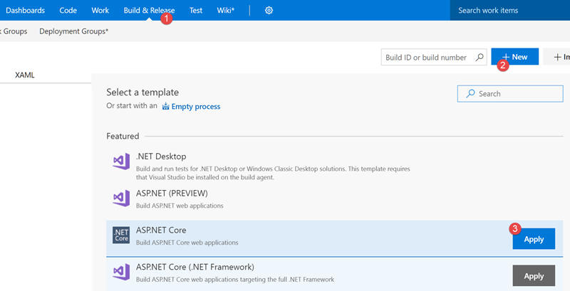
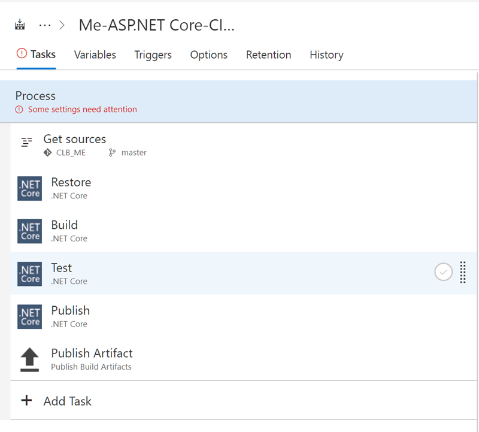
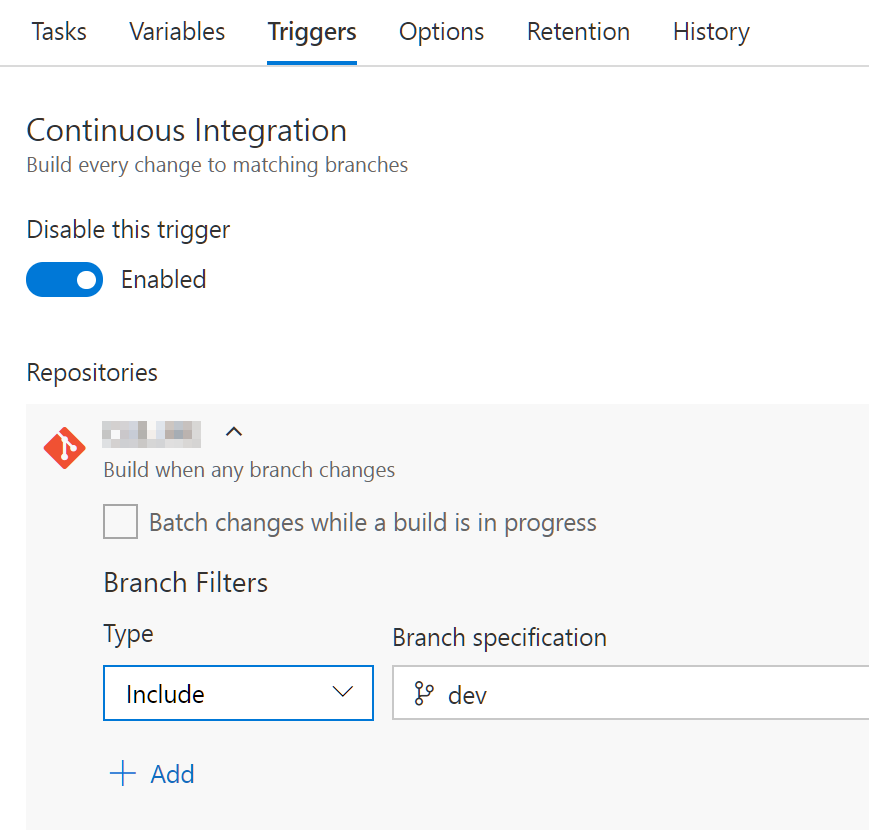
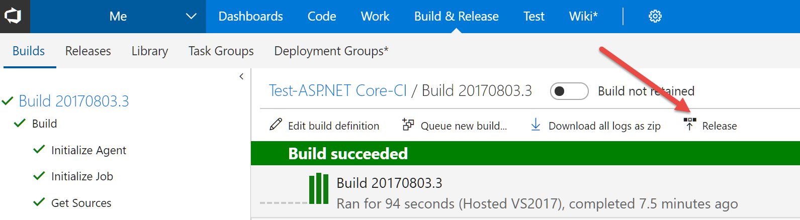
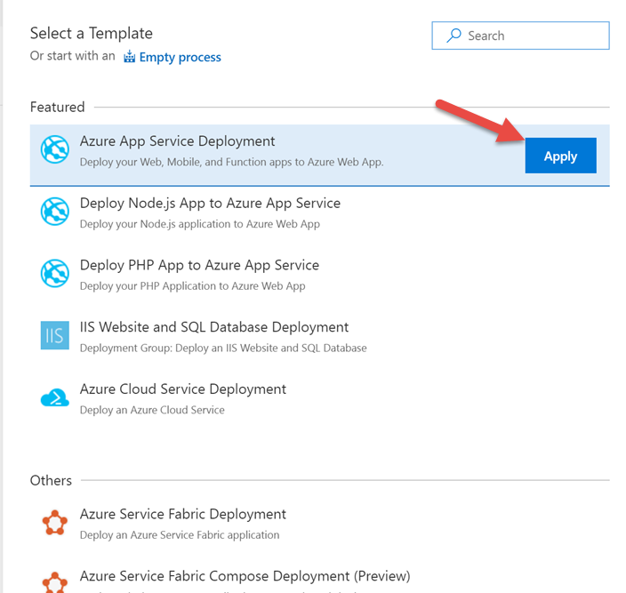
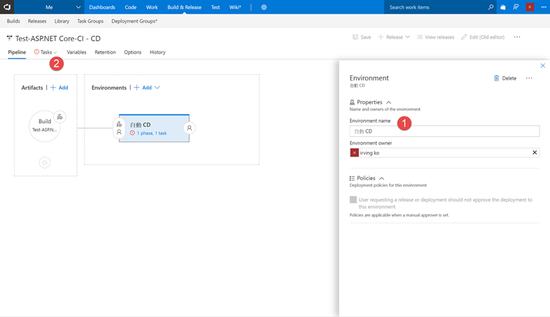
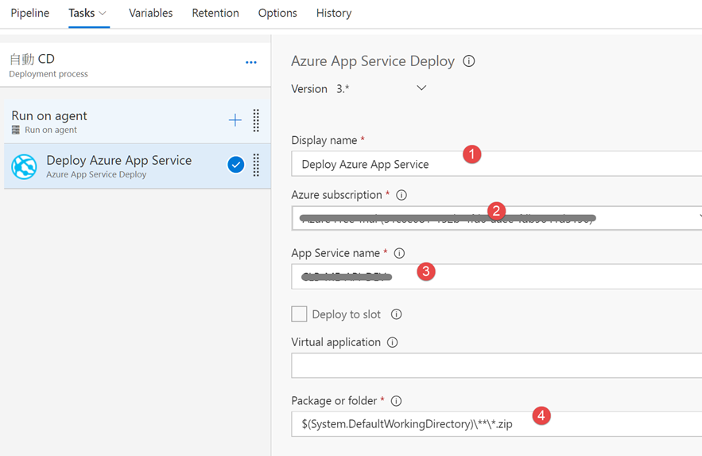
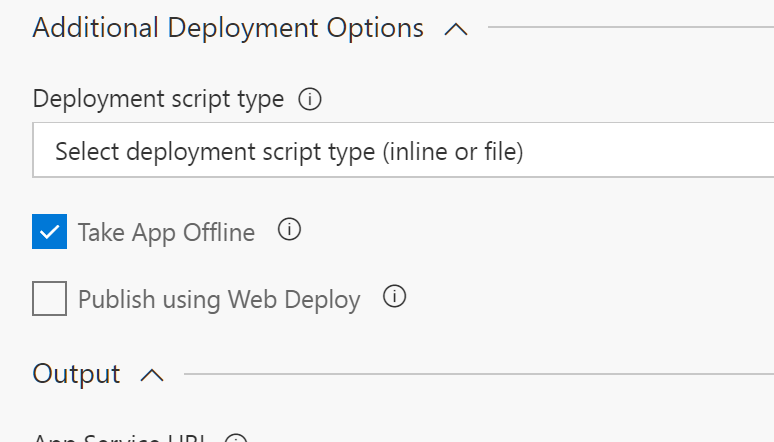
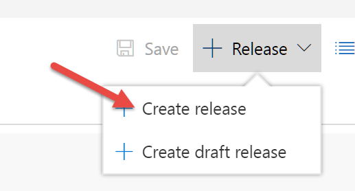
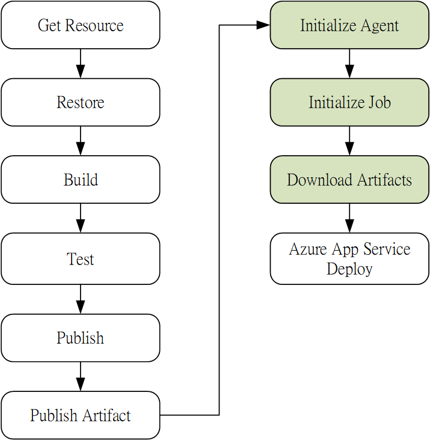

先決條件
- 在 VSTS 的 Git 有程式碼
- 有 Azure App Service
點選 Build & Release > New > ASP.NET Core

預設出現下面選項

在 Task 頁簽中，左邊是項目右邊是參數
第一個項目 Process
- Name: 可以自己取
- Default agent queue: 如果是 Asp.Net Core 專案必須使用 Hosted VS2017
- Project(s) to restore and build: 自己決定是要編譯那些專案
- Project(s) to test: 單元測試專案
第二個項目 Get Resources
選擇程式碼來源
第三個項目 Restore
負責 nuget 套件下載，不用改變
第四個項目 Build
負責編譯，不用改變
其中 Arguments 的 $(BuildConfiguration) 變數可以在 Variables 頁簽修改
第五個項目 Test
設定測試專案，不用改變
第六個項目 Publish
負責做出佈署檔，不用改變
其中 Arguments 的 $(build.artifactstagingdirectory) 變數可以參考Build variables
如果我們的專案只有 web api，那麼 Publish Web Projects 必須取消打勾，並輸入web api 的專案位置。(例如 **\api.csproj)
Zip Published Projects 打勾
最後一個 Publish Artifact
他會在 Path to Publish 的路徑下建立一個 Artifact Name 的目錄，並且產生一個發佈號碼，讓 release 可以取得
最後移動到 Triggers 頁簽，將 Continuous Integration 選項啟動，必選擇要監測的分支

設定到此即可，點選右上角的 Save & Queue，
如果想要直接執行，就選 Save & Queue，不執行就選 Save。
執行之後我們可以點選 Build 編號察看 LOG
從 Log 可以看出，在編譯的時候，
source code 是在 d:\a\1\s 底下，
編譯後 publish 會將檔案從 d:\a\1\s 搬到 d:\a\1\a
此時搬過來的檔案就是可以佈署的那個 zip 檔
接著在 Publish Artifact 的時候會出現 Upload ‘d:\a\1\a’ to file container: '#/107742/drop’
就是把 d:\a\1\a 裡面的檔案發佈到 #/107742/drop，這讓之後 release 的設定可以拿到需要的檔案。
建置成功之後，直接點選 release

就可以接著設定發佈方式。
選擇 Azure App Service Deployment，

會出現如下圖設定

Environment name 可以隨便取，然後選擇左邊 Task 頁簽，
看 Deploy Azure App Service 項目

1 是顯示名稱，隨便取
2 是訂閱帳號
3 是可用的 Azure App Service，2 有設定的話就會自動找到你能使用的。
4 是要佈署的檔案位置，也就是之前 build 的時候執行 Publish Artifact 項目匯出的位置，也就是 #/107742/drop 這個位置
這要設定正確，但如果前面都用預設值，就不必動他。
在往下看 Additional Deployment Options 這個群組

Take App Offline 要打勾，否則當 Web Api 啟動後，再次佈署更新時，會出現 FILE_IN_USE 的錯誤
Publish using Web Deploy 取消打勾。
設定就到此完成，按下存檔
之後可以馬上選擇旁邊的 release > Create release 執行佈署

總結 VSTS 的 CI\CD 流程如下圖

綠色部分 CD 時會自己執行，
GetResource 會從 git 將檔案下載
Publish 會產生zip 檔
Publish Artifact 會將檔案發佈到一個共享的 container
Download Artifacts 會將共享的檔案複製回工作目錄
Azure App Service Deploy 佈署到 Azure App Service